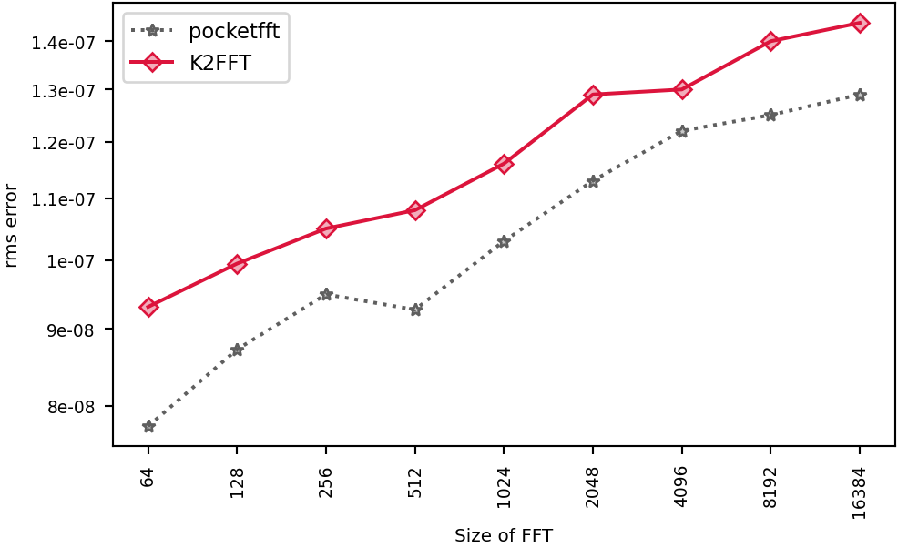

QEMU's default CPU
, L1d cache 64 KiB (2 instances), L2 cache 1 MiB (2 instances), L3 cache 32 MiB (1 instance), 4 CPUs
, a VM on Microsoft
.
Linux runnervm7aw5e 7.0.0-1017-azure #17~24.04.1-Ubuntu SMP PREEMPT Thu Sep 24 18:46:57 UTC 2026 x86_64 x86_64 x86_64 GNU/Linux
Runner image: ubuntu24 20261101.360.1
Emulated: qemu-s390x -L /usr/s390x-linux-gnu
Rounds: 5.
Compilers and flags (unless overridden): C GNU 13.3.0 ;
C++ GNU 13.3.0 .
Libraries: CMSISDSP 1.18.0, CMSISCORE 6.4.0, FFTW 3.3.10, IPP 2026.1.0, KFR 7.2.0, NE10 1f059a764d0e, K2FFT commit 5998ca16072a.
Raw data files: linux-s390x-qemu.counts.speed linux-s390x-qemu.accuracy linux-s390x-qemu.counts.tbl linux-s390x-qemu.info linux-s390x-qemu.sysinfo linux-s390x-qemu.ctest linux-s390x-qemu.verdicts linux-s390x-qemu.fastest
Checks: passed. K2FFT: beaten at 67 of 67, by pocketfft 67.
new: linux-s390x-qemu has no baseline
QEMU instruction counts, one round: codes no rival beat by more than 15%:
- powers of two: pocketfft 9 of 9
- other multiples of 32 (PFFFT's sizes): pocketfft 58 of 58